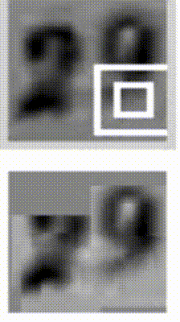
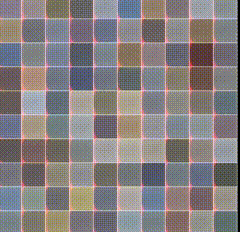
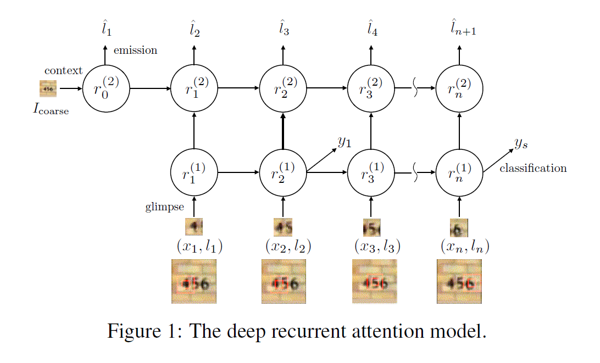
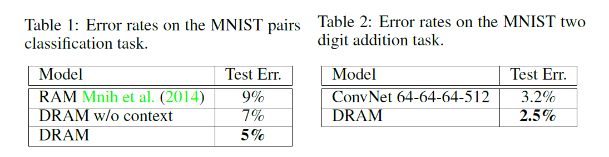

<!DOCTYPE html>


  <html lang="en">
    

    <head>
      <meta charset="utf-8" />
        
      <meta
        name="viewport"
        content="width=device-width, initial-scale=1, maximum-scale=1"
      />
      <title>RNN与注意力 |  小熊的小站</title>
  <meta name="generator" content="hexo-theme-ayer">
      
      <link rel="shortcut icon" href="/favicon.ico" />
       
<link rel="stylesheet" href="/dist/main.css">

      
<link rel="stylesheet" href="/css/fonts/remixicon.css">

      
<link rel="stylesheet" href="/css/custom.css">
 
      <script src="https://cdn.staticfile.org/pace/1.2.4/pace.min.js"></script>
       

<script type="text/javascript">
(function(i,s,o,g,r,a,m){i['GoogleAnalyticsObject']=r;i[r]=i[r]||function(){
(i[r].q=i[r].q||[]).push(arguments)},i[r].l=1*new Date();a=s.createElement(o),
m=s.getElementsByTagName(o)[0];a.async=1;a.src=g;m.parentNode.insertBefore(a,m)
})(window,document,'script','//www.google-analytics.com/analytics.js','ga');

ga('create', '454934039', 'auto');
ga('send', 'pageview');

</script>


 
<script>
var _hmt = _hmt || [];
(function() {
	var hm = document.createElement("script");
	hm.src = "https://hm.baidu.com/hm.js?71ee62302f36ca8f840077a641705255";
	var s = document.getElementsByTagName("script")[0]; 
	s.parentNode.insertBefore(hm, s);
})();
</script>


      <link
        rel="stylesheet"
        href="https://cdn.jsdelivr.net/npm/@sweetalert2/theme-bulma@5.0.1/bulma.min.css"
      />
      <script src="https://cdn.jsdelivr.net/npm/sweetalert2@11.0.19/dist/sweetalert2.min.js"></script>

      <!-- mermaid -->
      
      <style>
        .swal2-styled.swal2-confirm {
          font-size: 1.6rem;
        }
      </style>
    </head>
  </html>
</html>


<body>
  <div id="app">
    
      
    <main class="content on">
      <section class="outer">
  <article
  id="post-20240512"
  class="article article-type-post"
  itemscope
  itemprop="blogPost"
  data-scroll-reveal
>
  <div class="article-inner">
    
    <header class="article-header">
       
<h1 class="article-title sea-center" style="border-left:0" itemprop="name">
  RNN与注意力
</h1>
 

      
    </header>
     
    <div class="article-meta">
      <a href="/2024/20240512/" class="article-date">
  <time datetime="2024-05-12T08:48:12.000Z" itemprop="datePublished">2024-05-12</time>
</a>   
<div class="word_count">
    <span class="post-time">
        <span class="post-meta-item-icon">
            <i class="ri-quill-pen-line"></i>
            <span class="post-meta-item-text"> Word count:</span>
            <span class="post-count">2k</span>
        </span>
    </span>

    <span class="post-time">
        &nbsp; | &nbsp;
        <span class="post-meta-item-icon">
            <i class="ri-book-open-line"></i>
            <span class="post-meta-item-text"> Reading time≈</span>
            <span class="post-count">8 min</span>
        </span>
    </span>
</div>
 
    </div>
      
    <div class="tocbot"></div>


  
    <div class="article-entry" itemprop="articleBody">
       
  <link rel="stylesheet" type="text&#x2F;css" href="https://cdn.jsdelivr.net/npm/hexo-tag-hint@0.3.1/dist/hexo-tag-hint.min.css"><p>2014年，Volodymyr的《Recurrent Models of Visual Attention》一文中首先将注意力其应用在视觉领域，后来伴随着2017年Ashish Vaswani的《Attention is all you need》中Transformer结构的提出，注意力机制大成。</p>
<p>在注意力机制中，除去耳熟能详的SENet和CBAM，也有一些主动去学习注意区域的网络算法。</p>
<p>比如以下两篇，都出自deepmind。</p>
<p><a target="_blank" rel="noopener" href="https://arxiv.org/pdf/1412.7755">《MULTIPLE OBJECT RECOGNITION WITH VISUAL ATTENTION》</a>ICLR 2015</p>
<p>《<a target="_blank" rel="noopener" href="https://arxiv.org/pdf/1502.04623">DRAW: A Recurrent Neural Network For Image Generation</a>》</p>
<span id="more"></span>

<center>
<figure>
    
    
</figure>
</center>

<h2 id="DRAM"><a href="#DRAM" class="headerlink" title="DRAM"></a>DRAM</h2><p>模型架构：</p>
<p></p>
<h3 id="Glimpse-Network"><a href="#Glimpse-Network" class="headerlink" title="Glimpse Network**"></a>Glimpse Network**</h3><p>该网络是一种非线性函数，接收当前输入的图像patch或者说是glimpse,$x_n$,以及其位置序列$l_n$,其中$l_n=(x_n,y_n)$作为输入，输出一个向量$g_{n}$。</p>
<p>Glimpse Network 的工作就是从原始图像中从位置$l_{n}$附近提取一组有用的特征。利用$G_{image}(x_n|W_{image})$来表示函数$G_{image}(\dot)$的输出向量$G_{image}(\dot)$的输入是图像patch $x_n$,然后以权重$W_image${参 数 化 }，$G_{image}( \dot )$ 通常由三个卷积隐层构成，没有pooling layer,然后紧跟着一个全连接层。</p>
<p>另外，$G_{loc}(l_{n}|W_{loc})$利用全连接的隐层来映射出位置元组，$G_{loc}(l_{n}|W_{loc})$ 和$G_{image}(x_n|W_{image})$拥有相同的维度。</p>
<p>我们将这两个向量进行点乘操作得到最终的 glimpse feature vector $g_n:$<br>$$g_{n}=G_{image}(x_{n}|W_{image})G_{loc}(l_n|W_{loc}).$$</p>
<h3 id="Recurrent-Network"><a href="#Recurrent-Network" class="headerlink" title="Recurrent Network"></a><strong>Recurrent Network</strong></h3><p>RN汇聚从每一个glimpse上提取的信息，并且以一种 coherent manner组合起来以保存空间信息。</p>
<p>从 glimpse Network 得到的glimpse feature vector $g_n$作为每一个时刻 RN的输入。RN 由两个循环层和非线性函数$R_{recur}$构成，定义两个 recurrent layer的输出为$r^{(1)}$ and $r^{(2)}:$<br>$$r^{(1)}=R_{recur}(g_n,r_{n-1}^{(1)}|W_{r1})\r^{(2)}=R_{recur}(g_n,r_{n-1}^{(2)}|W_{r2})$$</p>
<p>我们用LSTN单元来处理非线性$R_{recur}$,因为其具有学习长期依赖(long-range dependencies)和稳定的学习动态(stable learning dynamics)的能力。</p>
<h3 id="Emission-Network"><a href="#Emission-Network" class="headerlink" title="Emission Network"></a><strong>Emission Network</strong></h3><p>该网络将RN当前的状态作为输入，然后预测出 glimpse network 应该向何处提取图像patch。这个就像一个指挥中心，从 RN 中基于当前的内部状态，控制着attention。由一个全连接隐层构成，将feature vector $r_n^{(2)}$从recurrent layer的顶部映射成坐标元组$l_{n+1}:$<br>$$\hat{l}_{n+1}=E(r_n^{(2)}|W_e)$$</p>
<h3 id="Context-Network"><a href="#Context-Network" class="headerlink" title="Context Network"></a><strong>Context Network</strong></h3><p>Context Network 提供了RN的输出状态，其输出用于 emission Network 来预测第一个glimpse的位置。Context Network $C(*)$ 将下采样的图像 $I_{coarse}$作为输入，并且出书一个固定长度的向量$c_I$。该结构信息提供了一个可见的提示，即：所给图像潜在的感兴趣区域的位置。采用三个卷积层将粗糙的图像$I_{coarse}$映射成特征向量作为 RN 的top recurrrent layer $r^2$ 的初始状态。底层 $r^{1}$初始化为零向量，原因后面会具体介绍。</p>
<h3 id="Classification-Network"><a href="#Classification-Network" class="headerlink" title="Classification Network"></a><strong>Classification Network</strong></h3><p>分类网络基于底层RN的最终的特征向量 $r_{N}^{(1)}$预测出一个类别标签y。由一个全连接隐层和softmax 输出层构成：<br>$$P(y|I)=O(r_n^1|W_o)$$</p>
<p>理想情况下，深度循环attention model 应该学习去寻找对分类物体相关的位置。Contextual information的存在，提供了一个”short cut”的解决方案，使得模型通过组合不同glimpse的信息从而更加容易学习到Contextudl information。</p>
<p>我们阻止如此不想要的行为，通过链接 context network and classification network 到不同的 recurrent layer。所以，最终使得contextual information 不能被直接用于 classification network,然后只影响模型产生的glimpse locations序列。</p>
<h3 id=""><a href="#" class="headerlink" title=""></a></h3><p>给定一张图像 I 的类别标签 y，我们可以利用交叉熵目标函数，将学习过程规划为 有监督分类问题。attention model 基于每一个 glimpse 得到潜在的位置变量 l，然后提取出对应的patches。所以我们可以通过忽略 glimpse locations 来最大化 类别标签的似然性 ：</p>
<p>$$logp(y|I,W)=log\sum_{l}p(l|I,W)p(y|l,I,W)$$<br>忽略的目标函数可以通过其 variational free energy lower bound F 来学到：<br>$$\begin{aligned}\log\sum_{l}p(l|I,W)p(y|l,I,W)&amp;\geq\sum_{l}p(l|I,W)\log p(y,l|I,W)+H[l]\&amp;=\sum_{l}p(l|I,W)\log p(y|l,I,W)\end{aligned}$$</p>
<p>将上述函数求关于模型参数W的导数，可以得到学习的规则：<br>$$\begin{aligned}\frac{\partial\mathcal{F}}{\partial W}&amp;=\sum_{l}p(l|I,W)\frac{\partial\log p(y|l,I,W)}{\partial W}+\sum_{l}\log p(y|l,I,W)\frac{\partial p(l|I,W)}{\partial W}\&amp;=\sum_{l}p(l|I,W)\left[\frac{\partial\log p(y|l,I,W)}{\partial W}+\log p(y|l,I,W)\frac{\partial\log p(l|I,W)}{\partial W}\right]\end{aligned}$$</p>
<p>在glimpse 序列中的每个glimpse，很难在训练中估计许多成指数式glimpse<br>locations。上面公式的和可以利用蒙特卡罗采样(Monte Carlo Samples)的方法来进行<br>估计：<br>$$\tilde{l}^m\sim p(l_n|I,W)=\mathcal{N}(l_n;\hat{l}<em>n,\Sigma)$$<br>$$\frac{\partial\mathcal{F}}{\partial W}\approx\frac{1}{M}\sum</em>{m=1}^{M}\left[\frac{\partial\log p(y|\tilde{l}^m,I,W)}{\partial W}+\log p(y|\tilde{l}^m,I,W)\frac{\partial\log p(\tilde{l}^m|I,W)}{\partial W}\right]$$</p>
<p>上面第二个公式提供了一种实际的算法来训练深度attention model。即，在每次glimpse 之后，我们从模型中预测出的glimpse location中进行采样。这些样本然后用于标准的后向传播来得到当前模型参数的估计。似然性$logp(y|l^m,I,W)$有一个unbounded range,可以在梯度估计中引入大量的 high variance。特别是，当图像中采样的位置偏离物体时，log 似然性会引入一个不想要的较大的梯度更新，并且通过剩下的模型进行后向传播。</p>
<p>我们可以减小公式(10)中的 variance,通过将$logp(y|l^{m},I,W)$替换为 0/1离<br>散指示函数 R,然后利用一个baseline technique 来解决该问题：<br>$$R=\left{\begin{matrix}1&amp;y=\arg\max_y\log p(y|\tilde{l}^m,I,W)\0&amp;\text{otherwise}\end{matrix}\right.$$<br>$$b_n=E_{baseline}(r_n^{(2)}|W_{baseline})$$</p>
<p>像所展示的那样，recurrent network state vector $r_n^{(2)}$用来估计每一个glimpse 基于状态的baseline $b$,此举明显的改善了学习的效率。该baseline 有效地中心化了随机变量 R,并且可以通过向期望的R值讲行回归而学习到。给定指示函数和baseline,我们有如下的梯度更新：<br>$$\dfrac{\partial\mathcal{F}}{\partial W}\approx\dfrac{1}{M}\sum\limits_{m=1}^{M}\left[\dfrac{\partial\log p(y|\tilde{l}^m,I,W)}{\partial W}+\lambda(R-b)\dfrac{\partial\log p(\tilde{l}^m|I,W)}{\partial W}\right]$$</p>
<p>其中，超参数$\lambda$平衡了两个梯度成分的尺度。实际上，通过利用 0/1指示函数，上式的学习规则就等价于利用强化学习的方法来训练attention model。当看作是强化学习更新时，公式13的第二项就是基于glimpse policy的期望奖励R的对应W的梯度无偏估计。(原文：the second term in equation 13 is an unbiased estimate of the gradient with respect to W of the expected reward R under the model glimpse policy。)<br>在推理的过程中，前馈位置估计可以用作位置坐标的决策性估计，以此提取模型下一个输入图像patch。该模型表现的像一个常规的前馈网络。我们的marginallized objective function equation 5 通过利用位置序列的采样，提供了一个预测期望的类别估计，并且对这些估计进行平均：<br>$$\mathbb{E}<em>l[p(y|I)]\approx\frac{1}{M}\sum</em>{m=1}^Mp(y|I,\tilde{l}^m).$$</p>
<p>通过平均分类估计，这允许attention model 可以多次评价。作者的实验表明平均 log 概率可以得到最优的性能。</p>
<h3 id="实验结果"><a href="#实验结果" class="headerlink" title="实验结果"></a>实验结果</h3><p></p>
 
      <!-- reward -->
      
    </div>
    

    <!-- copyright -->
    
    <footer class="article-footer">
       
<div class="share-btn">
      <span class="share-sns share-outer">
        <i class="ri-share-forward-line"></i>
        分享
      </span>
      <div class="share-wrap">
        <i class="arrow"></i>
        <div class="share-icons">
          
          <a class="weibo share-sns" href="javascript:;" data-type="weibo">
            <i class="ri-weibo-fill"></i>
          </a>
          <a class="weixin share-sns wxFab" href="javascript:;" data-type="weixin">
            <i class="ri-wechat-fill"></i>
          </a>
          <a class="qq share-sns" href="javascript:;" data-type="qq">
            <i class="ri-qq-fill"></i>
          </a>
          <a class="douban share-sns" href="javascript:;" data-type="douban">
            <i class="ri-douban-line"></i>
          </a>
          <!-- <a class="qzone share-sns" href="javascript:;" data-type="qzone">
            <i class="icon icon-qzone"></i>
          </a> -->
          
          <a class="facebook share-sns" href="javascript:;" data-type="facebook">
            <i class="ri-facebook-circle-fill"></i>
          </a>
          <a class="twitter share-sns" href="javascript:;" data-type="twitter">
            <i class="ri-twitter-fill"></i>
          </a>
          <a class="google share-sns" href="javascript:;" data-type="google">
            <i class="ri-google-fill"></i>
          </a>
        </div>
      </div>
</div>

<div class="wx-share-modal">
    <a class="modal-close" href="javascript:;"><i class="ri-close-circle-line"></i></a>
    <p>扫一扫，分享到微信</p>
    <div class="wx-qrcode">
      
    </div>
</div>

<div id="share-mask"></div>  
  <ul class="article-tag-list" itemprop="keywords"><li class="article-tag-list-item"><a class="article-tag-list-link" href="/tags/%E4%BA%BA%E5%B7%A5%E6%99%BA%E8%83%BD/" rel="tag">人工智能</a></li><li class="article-tag-list-item"><a class="article-tag-list-link" href="/tags/%E6%B3%A8%E6%84%8F%E5%8A%9B/" rel="tag">注意力</a></li><li class="article-tag-list-item"><a class="article-tag-list-link" href="/tags/%E6%B7%B1%E5%BA%A6%E5%AD%A6%E4%B9%A0/" rel="tag">深度学习</a></li></ul>

    </footer>
  </div>

   
  <nav class="article-nav">
    
      <a href="/2024/20240513/" class="article-nav-link">
        <strong class="article-nav-caption">上一篇</strong>
        <div class="article-nav-title">
          
            Graph-MLP--Node Classification without Message Passing in Graph
          
        </div>
      </a>
    
    
      <a href="/2024/20240511/" class="article-nav-link">
        <strong class="article-nav-caption">下一篇</strong>
        <div class="article-nav-title">FINDING ADVERSARIALLY ROBUST GRAPH LOTTERY TICKETS</div>
      </a>
    
  </nav>

   
 
   
     
</article>

</section>
      <footer class="footer">
  <div class="outer">
    <ul>
      <li>
        Copyrights &copy;
        2019-2024
        <i class="ri-heart-fill heart_icon"></i> LJX
      </li>
    </ul>
    <ul>
      <li>
        
        
        
        Powered by <a href="https://hexo.io" target="_blank">Hexo</a>
        <span class="division">|</span>
        Theme - <a href="https://github.com/Shen-Yu/hexo-theme-ayer" target="_blank">Ayer</a>
        
      </li>
    </ul>
    <ul>
      <li>
        
        
        <span>
  <span><i class="ri-user-3-fill"></i>Visitors:<span id="busuanzi_value_site_uv"></span></span>
  <span class="division">|</span>
  <span><i class="ri-eye-fill"></i>Views:<span id="busuanzi_value_page_pv"></span></span>
</span>
        
      </li>
    </ul>
    <ul>
      
    </ul>
    <ul>
      
    </ul>
    <ul>
      <li>
        <!-- cnzz统计 -->
        
        <script type="text/javascript" src='https://s9.cnzz.com/z_stat.php?id=1278069914&amp;web_id=1278069914'></script>
        
      </li>
    </ul>
  </div>
</footer>    
    </main>
    <div class="float_btns">
      <div class="totop" id="totop">
  <i class="ri-arrow-up-line"></i>
</div>

<div class="todark" id="todark">
  <i class="ri-moon-line"></i>
</div>

    </div>
    <aside class="sidebar on">
      <button class="navbar-toggle"></button>
<nav class="navbar">
  
  <div class="logo">
    <a href="/"></a>
  </div>
  
  <ul class="nav nav-main">
    
    <li class="nav-item">
      <a class="nav-item-link" href="/">主页</a>
    </li>
    
    <li class="nav-item">
      <a class="nav-item-link" href="/archives">目录</a>
    </li>
    
    <li class="nav-item">
      <a class="nav-item-link" href="/about">关于本站</a>
    </li>
    
    <li class="nav-item">
      <a class="nav-item-link" href="/about_me">关于我</a>
    </li>
    
    <li class="nav-item">
      <a class="nav-item-link" href="/photos">人间烟火</a>
    </li>
    
    <li class="nav-item">
      <a class="nav-item-link" target="_blank" rel="noopener" href="https://act18l.github.io/">欧拉计划</a>
    </li>
    
  </ul>
</nav>
<nav class="navbar navbar-bottom">
  <ul class="nav">
    <li class="nav-item">
      
      <a class="nav-item-link nav-item-search"  title="Search">
        <i class="ri-search-line"></i>
      </a>
      
      
    </li>
  </ul>
</nav>
<div class="search-form-wrap">
  <div class="local-search local-search-plugin">
  <input type="search" id="local-search-input" class="local-search-input" placeholder="Search...">
  <div id="local-search-result" class="local-search-result"></div>
</div>
</div>
    </aside>
    <div id="mask"></div>

<!-- #reward -->
<div id="reward">
  <span class="close"><i class="ri-close-line"></i></span>
  <p class="reward-p"><i class="ri-cup-line"></i>请我喝杯咖啡吧~</p>
  <div class="reward-box">
    
    <div class="reward-item">
      
      <span class="reward-type">支付宝</span>
    </div>
    
    
    <div class="reward-item">
      
      <span class="reward-type">微信</span>
    </div>
    
  </div>
</div>
    
<script src="/js/jquery-3.6.0.min.js"></script>
 
<script src="/js/lazyload.min.js"></script>

<!-- Tocbot -->
 
<script src="/js/tocbot.min.js"></script>

<script>
  tocbot.init({
    tocSelector: ".tocbot",
    contentSelector: ".article-entry",
    headingSelector: "h1, h2, h3, h4, h5, h6",
    hasInnerContainers: true,
    scrollSmooth: true,
    scrollContainer: "main",
    positionFixedSelector: ".tocbot",
    positionFixedClass: "is-position-fixed",
    fixedSidebarOffset: "auto",
  });
</script>

<script src="https://cdn.staticfile.org/jquery-modal/0.9.2/jquery.modal.min.js"></script>
<link
  rel="stylesheet"
  href="https://cdn.staticfile.org/jquery-modal/0.9.2/jquery.modal.min.css"
/>
<script src="https://cdn.staticfile.org/justifiedGallery/3.8.1/js/jquery.justifiedGallery.min.js"></script>

<script src="/dist/main.js"></script>

<!-- ImageViewer -->
 <!-- Root element of PhotoSwipe. Must have class pswp. -->
<div class="pswp" tabindex="-1" role="dialog" aria-hidden="true">

    <!-- Background of PhotoSwipe. 
         It's a separate element as animating opacity is faster than rgba(). -->
    <div class="pswp__bg"></div>

    <!-- Slides wrapper with overflow:hidden. -->
    <div class="pswp__scroll-wrap">

        <!-- Container that holds slides. 
            PhotoSwipe keeps only 3 of them in the DOM to save memory.
            Don't modify these 3 pswp__item elements, data is added later on. -->
        <div class="pswp__container">
            <div class="pswp__item"></div>
            <div class="pswp__item"></div>
            <div class="pswp__item"></div>
        </div>

        <!-- Default (PhotoSwipeUI_Default) interface on top of sliding area. Can be changed. -->
        <div class="pswp__ui pswp__ui--hidden">

            <div class="pswp__top-bar">

                <!--  Controls are self-explanatory. Order can be changed. -->

                <div class="pswp__counter"></div>

                <button class="pswp__button pswp__button--close" title="Close (Esc)"></button>

                <button class="pswp__button pswp__button--share" style="display:none" title="Share"></button>

                <button class="pswp__button pswp__button--fs" title="Toggle fullscreen"></button>

                <button class="pswp__button pswp__button--zoom" title="Zoom in/out"></button>

                <!-- Preloader demo http://codepen.io/dimsemenov/pen/yyBWoR -->
                <!-- element will get class pswp__preloader--active when preloader is running -->
                <div class="pswp__preloader">
                    <div class="pswp__preloader__icn">
                        <div class="pswp__preloader__cut">
                            <div class="pswp__preloader__donut"></div>
                        </div>
                    </div>
                </div>
            </div>

            <div class="pswp__share-modal pswp__share-modal--hidden pswp__single-tap">
                <div class="pswp__share-tooltip"></div>
            </div>

            <button class="pswp__button pswp__button--arrow--left" title="Previous (arrow left)">
            </button>

            <button class="pswp__button pswp__button--arrow--right" title="Next (arrow right)">
            </button>

            <div class="pswp__caption">
                <div class="pswp__caption__center"></div>
            </div>

        </div>

    </div>

</div>

<link rel="stylesheet" href="https://cdn.staticfile.org/photoswipe/4.1.3/photoswipe.min.css">
<link rel="stylesheet" href="https://cdn.staticfile.org/photoswipe/4.1.3/default-skin/default-skin.min.css">
<script src="https://cdn.staticfile.org/photoswipe/4.1.3/photoswipe.min.js"></script>
<script src="https://cdn.staticfile.org/photoswipe/4.1.3/photoswipe-ui-default.min.js"></script>

<script>
    function viewer_init() {
        let pswpElement = document.querySelectorAll('.pswp')[0];
        let $imgArr = document.querySelectorAll(('.article-entry img:not(.reward-img)'))

        $imgArr.forEach(($em, i) => {
            $em.onclick = () => {
                // slider展开状态
                // todo: 这样不好，后面改成状态
                if (document.querySelector('.left-col.show')) return
                let items = []
                $imgArr.forEach(($em2, i2) => {
                    let img = $em2.getAttribute('data-idx', i2)
                    let src = $em2.getAttribute('data-target') || $em2.getAttribute('src')
                    let title = $em2.getAttribute('alt')
                    // 获得原图尺寸
                    const image = new Image()
                    image.src = src
                    items.push({
                        src: src,
                        w: image.width || $em2.width,
                        h: image.height || $em2.height,
                        title: title
                    })
                })
                var gallery = new PhotoSwipe(pswpElement, PhotoSwipeUI_Default, items, {
                    index: parseInt(i)
                });
                gallery.init()
            }
        })
    }
    viewer_init()
</script> 
<!-- MathJax -->
 <script type="text/x-mathjax-config">
  MathJax.Hub.Config({
      tex2jax: {
          inlineMath: [ ['$','$'], ["\\(","\\)"]  ],
          processEscapes: true,
          skipTags: ['script', 'noscript', 'style', 'textarea', 'pre', 'code']
      }
  });

  MathJax.Hub.Queue(function() {
      var all = MathJax.Hub.getAllJax(), i;
      for(i=0; i < all.length; i += 1) {
          all[i].SourceElement().parentNode.className += ' has-jax';
      }
  });
</script>

<script src="https://cdn.staticfile.org/mathjax/2.7.7/MathJax.js"></script>
<script src="https://cdn.staticfile.org/mathjax/2.7.7/config/TeX-AMS-MML_HTMLorMML-full.js"></script>
<script>
  var ayerConfig = {
    mathjax: true,
  };
</script>

<!-- Katex -->
 
    
        <link rel="stylesheet" href="https://cdn.staticfile.org/KaTeX/0.15.1/katex.min.css">
        <script src="https://cdn.staticfile.org/KaTeX/0.15.1/katex.min.js"></script>
        <script src="https://cdn.staticfile.org/KaTeX/0.15.1/contrib/auto-render.min.js"></script>
        
    
 
<!-- busuanzi  -->
 
<script src="/js/busuanzi-2.3.pure.min.js"></script>
 
<!-- ClickLove -->

<!-- ClickBoom1 -->

<!-- ClickBoom2 -->

<!-- CodeCopy -->
 
<link rel="stylesheet" href="/css/clipboard.css">
 <script src="https://cdn.staticfile.org/clipboard.js/2.0.10/clipboard.min.js"></script>
<script>
  function wait(callback, seconds) {
    var timelag = null;
    timelag = window.setTimeout(callback, seconds);
  }
  !function (e, t, a) {
    var initCopyCode = function(){
      var copyHtml = '';
      copyHtml += '<button class="btn-copy" data-clipboard-snippet="">';
      copyHtml += '<i class="ri-file-copy-2-line"></i><span>COPY</span>';
      copyHtml += '</button>';
      $(".highlight .code pre").before(copyHtml);
      $(".article pre code").before(copyHtml);
      var clipboard = new ClipboardJS('.btn-copy', {
        target: function(trigger) {
          return trigger.nextElementSibling;
        }
      });
      clipboard.on('success', function(e) {
        let $btn = $(e.trigger);
        $btn.addClass('copied');
        let $icon = $($btn.find('i'));
        $icon.removeClass('ri-file-copy-2-line');
        $icon.addClass('ri-checkbox-circle-line');
        let $span = $($btn.find('span'));
        $span[0].innerText = 'COPIED';
        
        wait(function () { // 等待两秒钟后恢复
          $icon.removeClass('ri-checkbox-circle-line');
          $icon.addClass('ri-file-copy-2-line');
          $span[0].innerText = 'COPY';
        }, 2000);
      });
      clipboard.on('error', function(e) {
        e.clearSelection();
        let $btn = $(e.trigger);
        $btn.addClass('copy-failed');
        let $icon = $($btn.find('i'));
        $icon.removeClass('ri-file-copy-2-line');
        $icon.addClass('ri-time-line');
        let $span = $($btn.find('span'));
        $span[0].innerText = 'COPY FAILED';
        
        wait(function () { // 等待两秒钟后恢复
          $icon.removeClass('ri-time-line');
          $icon.addClass('ri-file-copy-2-line');
          $span[0].innerText = 'COPY';
        }, 2000);
      });
    }
    initCopyCode();
  }(window, document);
</script>
 
<!-- CanvasBackground -->
 
<script src="/js/dz.js"></script>
 
<script>
  if (window.mermaid) {
    mermaid.initialize({ theme: "forest" });
  }
</script>


    
    

  </div>
</body>

</html>